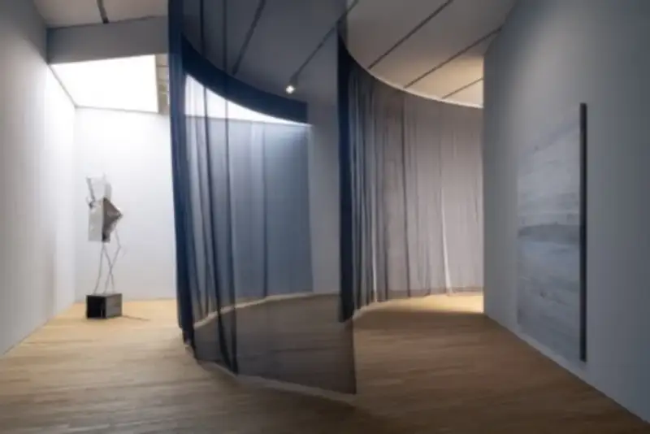
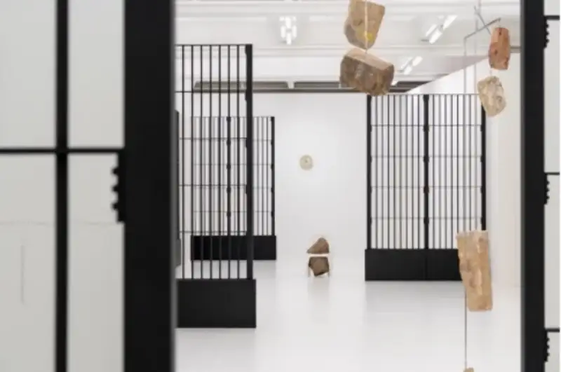
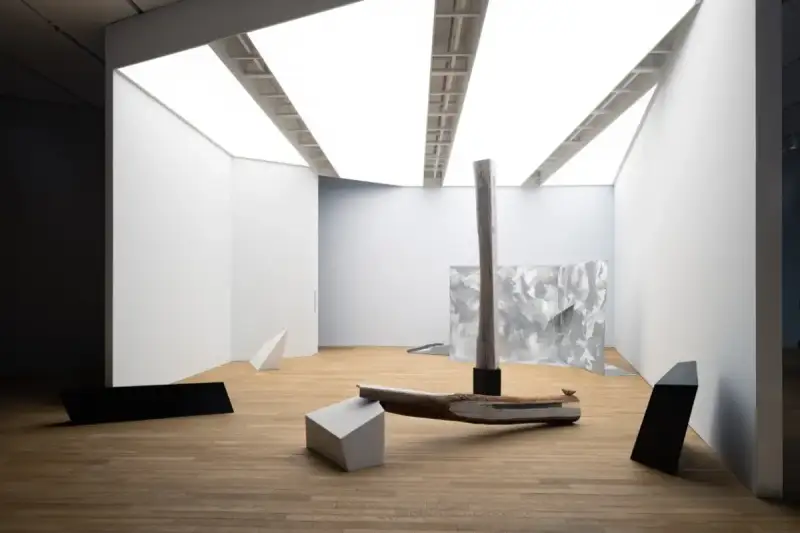
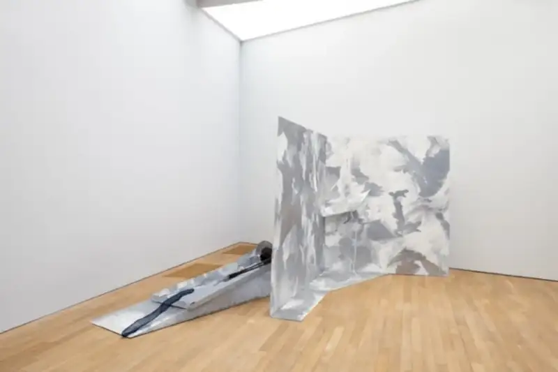
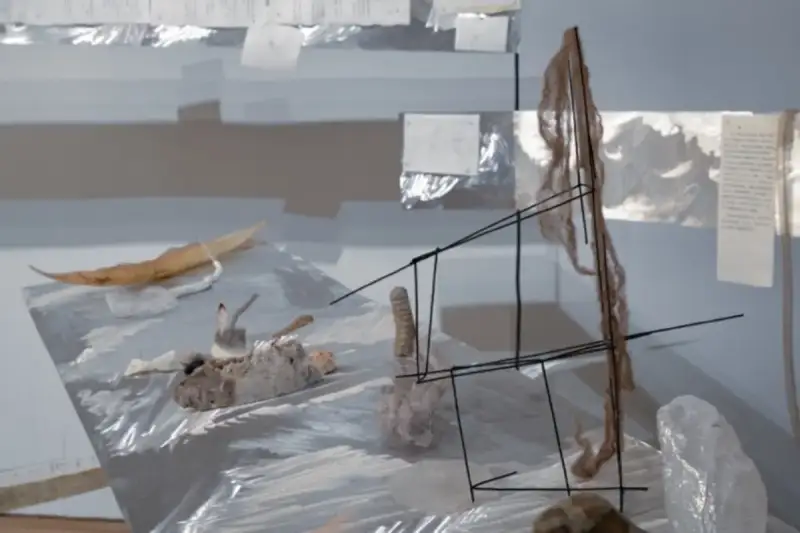
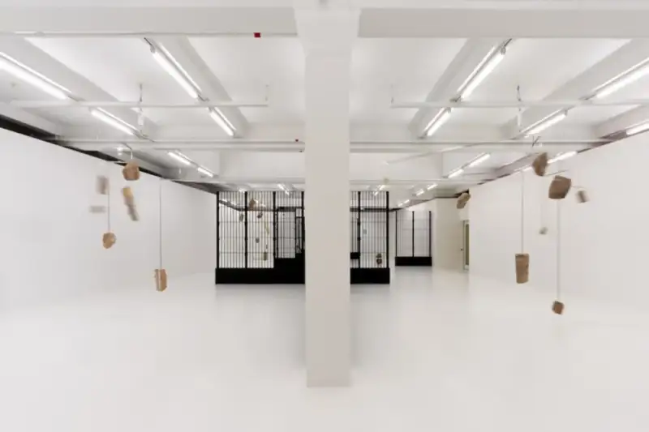

Hong Kong's Tai Kwun Contemporary recently opened a remarkable pair of shows. "Hu Xiaoyuan: Atypical Paths" and "Alicja Kwade: Pre-Utopia" run at the same time, drawing many art lovers, including people who traveled from Shenzhen just to see them.

Installation view of "Hu Xiaoyuan: Atypical Paths," Tai Kwun Contemporary, Hong Kong, China, 2025

Installation view of "Alicja Kwade: Pre-Utopia," Tai Kwun Contemporary, Hong Kong, China, 2025
In "Hu Xiaoyuan: Atypical Paths," the Harbin-born artist uses a unique vision to offer an experience that crosses natural science and poetic imagination. This is her first solo museum show in Hong Kong. It presents seven groups and twelve newly commissioned works. Hu has worked in contemporary art for twenty years, and her work has shown at institutions in many countries. In 2007, she became the first Chinese woman to take part in documenta in Kassel, Germany.

Installation view of "Hu Xiaoyuan: Atypical Paths," Tai Kwun Contemporary, Hong Kong, China, 2025
In this show, Hu combines traditional sculptural materials such as metal and stone with organic materials such as shells, insect wings, plants, and silk. She focuses on the discarded objects of social and biological systems, such as old steel bars from demolished buildings, used household items, dried fruit, empty beehives, dried insect wings, and the remains of sea creatures. In her view, all things, organic or inorganic, have their own path of life. She rearranges, juxtaposes, and combines these seemingly unrelated, functionless materials, then examines their meaning through literature and history.

Installation view of "Hu Xiaoyuan: Atypical Paths," Tai Kwun Contemporary, Hong Kong, China, 2025
For example, in "I Have Roots, but I Drift," Hu uses two aluminum plates and old aluminum objects to build a space. The front plate is covered with fictional manuscripts of women's stories, and the table below holds shells, insect wings, and other materials that echo the manuscripts. It presents her feeling about the paths and changes of life in a visual and sensory way. In "Corona on the Wasteland, or, Wasteland on the Corona II," inspired by the poem "Corona" by the Jewish-German poet Paul Celan, she combines steel, space-grade aluminum, and discarded light steel bars. The old bars extend and the aluminum plates enclose the space, joined by light silk to form a structure like a flower crown. Inside sit dried oranges and a hornet's nest. Through the strong visual clash of the materials, the work reflects the individual fate and the time and place of each object.

Installation view of "Hu Xiaoyuan: Atypical Paths," Tai Kwun Contemporary, Hong Kong, China, 2025
Also striking are the semi-transparent curtains made from xiao silk. Xiao is a type of raw silk, and its making holds the tension between softness and violence, wholeness and fragment, life and death. The curtains carve out separate display spaces and build winding paths for visitors. Together with the light on site, they create a hazy spatial experience, so that a visitor who stops becomes a sight for others. Xiao is also used again and again to attach, cover, and wrap the works. This shows Hu's unique way of choosing materials, and it weaves the biological, historical, and literary stories behind the materials together with her own observation of fate.

Alicja Kwade, "The Sky of Pre-Utopia," 2024. Image courtesy of the artist and Tai Kwun Contemporary.
Photo: Jimmy Ho
At the same time, "Alicja Kwade: Pre-Utopia" is on view at Tai Kwun Contemporary. Alicja Kwade was born in Katowice, Poland, and now lives in Berlin. She is known internationally for sculpture and large public installations. This show brings together nine works from different periods, and it also commissioned a new installation from her, made in response to the history and architecture of Tai Kwun's Warehouse F.
Drawing on her wide experience, Kwade builds "Pre-Utopia," a multiverse of extraordinary perception. The name refers to the conceptual state before a utopia takes shape. Through sculpture, sound, light, and performance installations, and by drawing on abstract science and philosophy, she questions reality and social structures. She breaks our assumptions about everyday objects, makes us think about how we perceive time, and offers new ways to see and understand reality. She invites the viewer to move between sensory experience and the intellect to explore the world.
Tai Kwun Contemporary blends art with cultural heritage and offers a fresh, varied experience. Its easy access and rich program of cultural events draw art lovers from the Pearl River Delta, especially from Shenzhen. A Mr. Wang, who came from Shenzhen, said the shows made him think more deeply about time, the state of matter, individual existence, and consciousness as he experienced the world around him.
Pi Li, curator of the shows and Head of Art at Tai Kwun, explained that these two shows, together with the upcoming "Maeve Brennan: A Natural History of Objects" at the end of March, form a new Tai Kwun Contemporary series called "Breakthrough." The series presents the work and face of emerging art in innovative forms. "Hu Xiaoyuan: Atypical Paths" runs until April 13, and "Alicja Kwade: Pre-Utopia" runs until April 6. During the shows, Tai Kwun Contemporary will also hold a series of public programs and education events that explore the themes in depth.